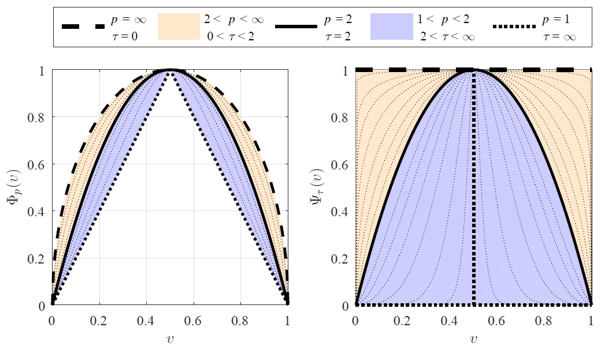

Research
Compassionately Conservative Balanced Cuts for Image Segmentation

The Normalized Cut (NCut) objective function, widely used in data clustering and image segmentation, quantifies the cost of graph partitioning in a way that biases clusters or segments that are balanced towards having lower values than unbalanced partitionings. However, this bias is so strong that it avoids any singleton partitions, even when vertices are very weakly connected to the rest of the graph. Motivated by the Buhler-Hein family of balanced cut costs, we propose the family of Compassionately Conservative Balanced (CCB) Cut costs, which are indexed by a parameter that can be used to strike a compromise between the desire to avoid too many singleton partitions and the notion that all partitions should be balanced. We show that CCB-Cut minimization can be relaxed into an orthogonally constrained lτ -minimization problem that coincides with the problem of computing Piecewise Flat Embeddings (PFE) for one particular index value, and we present an algorithm for solving the relaxed problem by iteratively minimizing a sequence of reweighted Rayleigh quotients (IRRQ). Using images from the BSDS500 database, we show that image segmentation based on CCB-Cut minimization provides better accuracy with respect to ground truth and greater variability in region size than NCut-based image segmentation.
Measuring Catastrophic Forgetting in Neural Networks

Deep neural networks are used in many state-of-the-art systems for machine perception. Once a network is trained to do a specific task, e.g., bird classification, it cannot easily be trained to do new tasks, e.g., incrementally learning to recognize additional bird species or learning an entirely different task such as flower recognition. When new tasks are added, typical deep neural networks are prone to catastrophically forgetting previous tasks. Networks that are capable of assimilating new information incrementally, much like how humans form new memories over time, will be more efficient than retraining the model from scratch each time a new task needs to be learned. There have been multiple attempts to develop schemes that mitigate catastrophic forgetting, but these methods have not been directly compared, the tests used to evaluate them vary considerably, and these methods have only been evaluated on small-scale problems (e.g., MNIST). In this paper, we introduce new metrics and benchmarks for directly comparing five different mechanisms designed to mitigate catastrophic forgetting in neural networks: regularization, ensembling, rehearsal, dual-memory, and sparse-coding. Our experiments on real-world images and sounds show that the mechanism(s) that are critical for optimal performance vary based on the incremental training paradigm and type of data being used, but they all demonstrate that the catastrophic forgetting problem has yet to be solved.